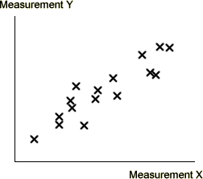
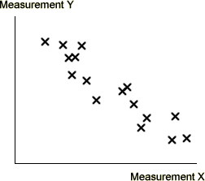
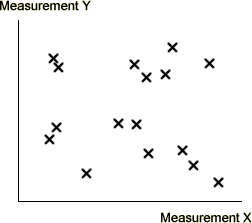
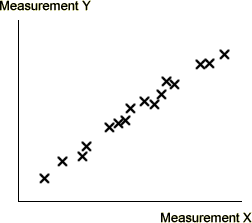
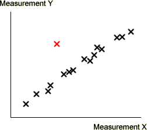

Relationships
A scatterplot of displays the relationship between two measurements. The measurements are said to be related if high or low values of one measurement tend to be associated with 'individuals' with particular values of the other.
For the most commonly encountered relationships, the scatterplot takes the form of a cloud of crosses stretching from the bottom left to the top right, (a positive relationship) or from the top left to bottom right (a negative relationship).
| Positive relationship | Negative relationship |
|---|---|
|  |  |
When you see a relationship between two measurements, think carefully about why they might be related in this way.
Strength of the relationship
If the crosses in a scatterplot form a circular cloud with no upward or downward trend, there is no relationship between the measurements.
On the other hand, if the crosses lie close to a sloping straight line or curve, we say that the relationship is strong. In strong relationships, a reasonably accurate guess could be made of the value of one measurement from the other measurement.
| Weak or no relationship | Strong relationship | |
|---|---|---|
|  |  |
Exceptions
The strength of a relationship is important, but it is often the crosses that do not conform to the general trend that are most informative.

In the scatterplot above, the red cross is an 'individual' whose Y-measurement is much higher than that of others with similar X-measurements.
Birth rate and life expectancy
The scatterplot of the two measuements is repeated below.
There is a moderately strong negative relationship between birth rate and life expectancy.
Countries with high life expectancy tend to have low birth rates, and vice versa.
The first two items on the pop-up menu highlight the most extreme countries that conform to this general pattern.
Now select Low birth rate vs life expectancy from the pop-up menu to identify some countries that are more unusual. These can be interpreted as:
Click on the individual crosses in the yellow region to identify the countries. Observe that they are mostly in Southern Africa (with lower life expectancies) or in Eastern Europe (higher life expectancies).
Finally select High birth rate vs life expectancy from the pop-up menu. These countries have higher birth rates than most other countries with similar life expectancies.
Annotating a scatterplot
When displayed on a computer, it is possible to identify countries by clicking on crosses. Scatterplots that are published on web sites can be programmed to be interactive in this way.
On paper, this is impossible. If there are only a few crosses, it may be possible to print the name adjacent to each cross on the scatterplot, but this is too cluttered if there are many crosses.
However it is often helpful to print names beside any crosses that stand out from the rest. Their identity is usually much more important than that of the crosses in the 'middle' of the scatterplot.
In general, always consider annotating diagrams to point out important features.